us-central1
us-east1
europe-west1
asia-southeast1
VPC Peering · TCP 80
Americas → Europe
Classic IPsec VPN · TCP 3389
Europe → Asia
☁
americas-vpc
(spoke)
us-east1 + us-central1
americas-subnet1
172.16.0.0/24
▣
americas-instance-1
Compute Engine · us-east1
americas-subnet2
172.16.1.0/24
▣
americas-instance-2
Compute Engine · us-central1
☁
hq-eu-vpc
(hub)
europe-west1
hq-europe-subnet1
10.105.10.0/24
▣
europe-instance
Compute Engine · Ubuntu + Apache
⇥
eu-nat
Cloud NAT · outbound only
↔
europe-vpn-gateway
Cloud VPN · IPsec
☁
asia-vpc
(spoke)
asia-southeast1
asia-subnet
192.168.2.0/24
▣
asia-instance
Compute Engine · Windows
↔
asia-vpn-gateway
Cloud VPN · IPsec
Explore Traffic Flows
▶
Americas → HQ
HTTP · TCP 80
▶
HQ → Asia
RDP · TCP 3389
▶
Security Boundaries
View allowed & denied